Feijoada
No buffet livre, com tudo que acompanha.
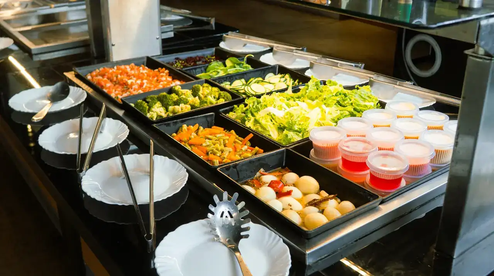
Comida de vó e chopp gelado desde
Choperia e pizzaria em Itapetininga, com almoço caseiro todo dia e a mesa cheia à noite.
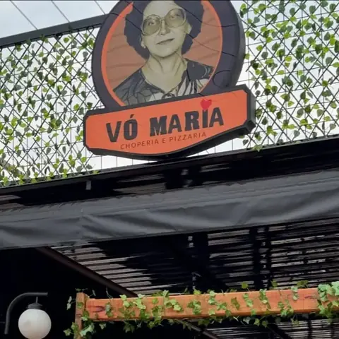
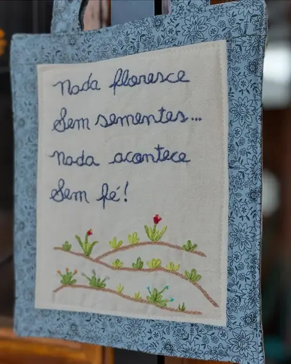
nada floresceA história da casa começa com uma avó. O Vó Maria foi criado pela família como um tributo à mulher que sempre cuidou de todos com amor e dedicação, e é ela quem está no nosso selo.
As obras começaram em maio de 2024 e as portas abriram em 18 de novembro daquele ano, às 18h. Desde então a casa recebe famílias no almoço, amigos à noite e crianças no espaço kids.
Comida boa, chopp gelado e companhia: essa é a nossa linguagem de amor.
Venha nos conhecerO que mais sai da cozinha e do bar
No buffet livre, com tudo que acompanha.
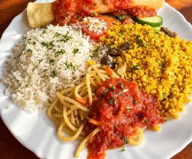
Comida caseira à vontade no almoço.
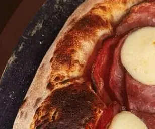
Vários sabores passando pela mesa.
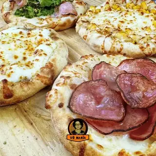
Abertas e saindo do forno.
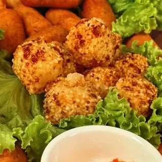
Crocante por fora, macio por dentro.
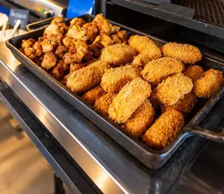
Sequinho, do jeito da Vó.
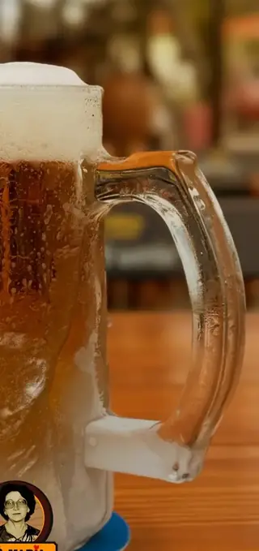
Caneca gelada, espuma no ponto.
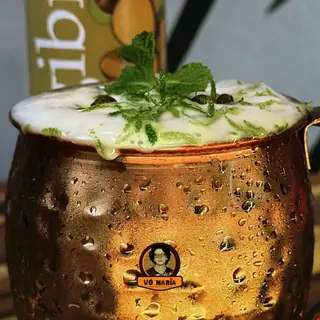
Na caneca de cobre.
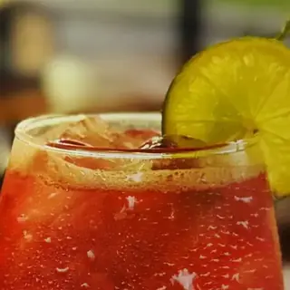
Morango fresco e saquê.
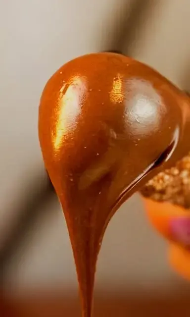
Com doce de leite cremoso.
Toque num dia para ver o que tem. O dia de hoje já vem marcado.
Aberto todos os dias a partir das 11h · Almoço das 11h às 15h
Preços do almoço aqui. Os da noite, no salão ou pelo WhatsApp.
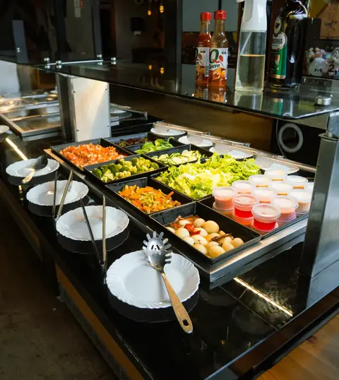
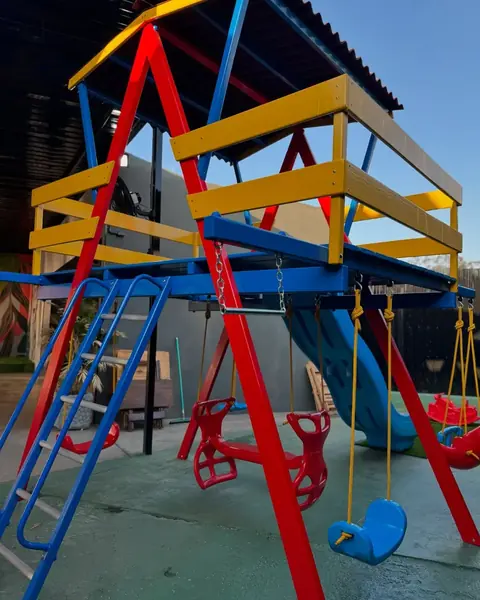
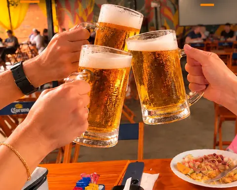
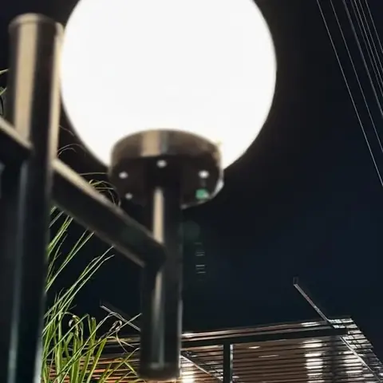
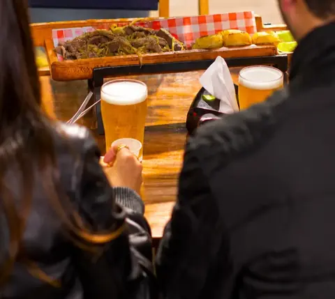
Parquinho com escorregador e balanço. As crianças brincam e a família almoça com calma.
criança feliz, vó feliz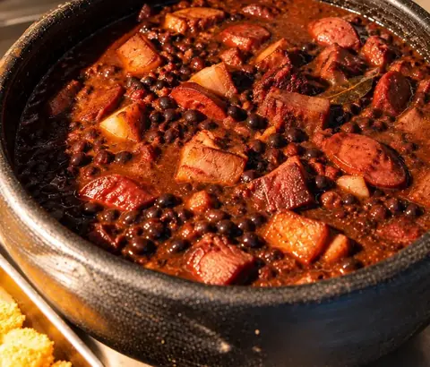
Feijoada caprichada no buffet livre, com tudo que acompanha, no almoço das quartas e dos sábados.
chega cedo!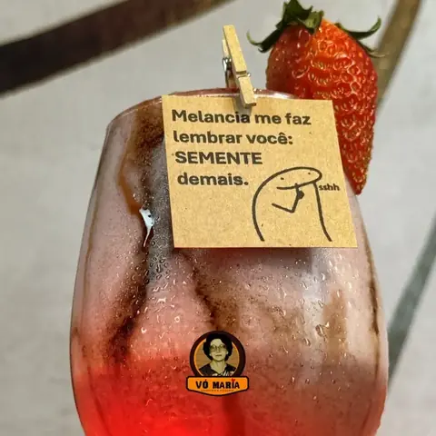
Tem drink que chega com um bilhete de papel preso no copo, escrito à mão. Vale guardar.
“melancia me faz lembrar você”No fim de semana tem som ao vivo: pagode no domingo à tarde, moda de viola e noites como a roda sertaneja Canta Que Eu Bebo.
agenda no InstagramAniversário, confraternização da empresa, amigo secreto ou só uma desculpa pra juntar a turma: a casa recebe a sua festa com comida caseira, pizza e chopp gelado.
Aniversariante ganha a sobremesa por conta da casa.
Faça o seu evento“Seu sábado também pode ser assim, com cerveja boa, gastronomia impecável e um som ao vivo maneiro!”Raquel Medeiros, @raquelmedeirosblog